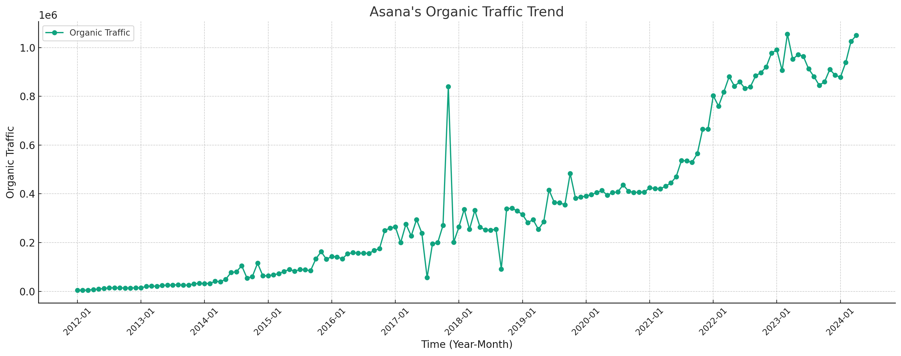

Asana SEO Strategy Analysis (2024)
Takeaways
- SEO Trend: During the period from 2017 to 2023, Asana’s average traffic increased significantly to 504,403, indicating an effective growth in their SEO efforts.
- SEO Keyword Strategy: In November 2017, the keyword ‘gmail’ alone accounted for 76.98% of the traffic under the ‘Email Management’ category, showing a strong reliance on branded integrations.
- SEO URL Traffic Distribution: The URL ‘https://asana.com/resources/swot-analysis' generated a significant amount of traffic, which highlights the effectiveness of targeting educational content in their SEO strategy.
Note: The data used in this article is only for the desktop side in the US market. All data are taken from third-party platforms, this site does not guarantee the accuracy of the data.

Analysis of traffic trends for Asana’s “Organic Traffic” over the specified phases is organized in the table below, showing each phase, the average traffic, and the observed trend:
| Phase | Average Traffic | Trend |
|---|---|---|
| Phase 1: 2012-01 to 2017-11 | 104,807 | Increasing |
| Phase 2: 2017-11 to 2023-03 | 504,403 | Increasing |
| Phase 3: 2023-03 to 2024-03 | 929,157 | Decreasing |
- Phase 1 (2012-01 to 2017-11): The organic traffic shows a steady increase. This period likely represents the growth and establishment phase of Asana’s market presence and SEO efforts.
- Phase 2 (2017-11 to 2023-03): There is a significant increase in average traffic compared to the first phase, indicating a maturation and possibly an expansion of Asana’s SEO strategy and online influence.
- Phase 3 (2023-03 to 2024-03): Despite the high average traffic, there is a decreasing trend in this phase. This might suggest market saturation, increased competition, or changes in search algorithms impacting traffic.
See more about Asana’s SEM strategy.
Asana’s SEO Strategy in November 2017
Organic Keyword Distribution
| Keyword Topic | Keyword Example | Traffic | Traffic (%) |
|---|---|---|---|
| Email Management | gmail | 646,204 | 76.98% |
| Project Management | asana | 162,843 | 19.40% |
| Other | organize tasks | 27,790 | 3.31% |
| Cloud Storage | google drive | 2,525 | 0.30% |
| Team Communication | slack | 75 | 0.01% |
Classification Rules:
- Email Management: Keywords like ‘gmail’, ‘gamil’, and ‘g mail’ are grouped together due to being product-related and typo variants.
- Project Management: Keywords directly related to “Asana.”
- Cloud Storage: Keywords involving ‘google drive’.
- Team Communication: Keywords like ‘slack’.
- Other: Keywords that don’t fit into the above categories like competitor brands, e.g. ClickUp, Notion, Wrike, Jira, Monday.com, and etc.
URL Traffic Distribution
Here are the top 5 URLs by traffic:
| URL | Traffic | Traffic (%) |
|---|---|---|
| https://asana.com/gmail | 653,775 | 77.88% |
| https://asana.com/ | 142,246 | 16.95% |
| https://asana.com/apps/google-drive | 2,510 | 0.30% |
| https://asana.com/pricing | 1,825 | 0.22% |
| https://asana.com/apps/chrome | 1,767 | 0.21% |
Summary of Asana’s SEO Strategy
- Integration Focus: The predominant traffic to the Gmail integration page suggests a strategic emphasis on showcasing Asana’s compatibility and integration with popular tools like Gmail, which could appeal to users seeking project management solutions that work seamlessly with their existing email setups.
- Core Product Visibility: The main homepage also drives a significant portion of traffic, which is typical for brand awareness and direct searches for “Asana.”
- Niche Integrations: Smaller traffic volumes to other integration-specific pages (like Google Drive and Chrome) suggest a diversified approach to targeting users of various platforms, although these represent a much smaller share of the overall traffic.
Asana’s SEO Strategy in March 2023
Organic Keyword Distribution
| Keyword Topic | Keyword Example | Traffic | Traffic (%) |
|---|---|---|---|
| Other | osana project management | 527,164 | 50.05% |
| Project Management | asana | 499,210 | 47.39% |
| Cloud Storage | cloud storage | 15,964 | 1.52% |
| Productivity Techniques | smart goals | 10,502 | 1.00% |
| Team Communication | team communication | 460 | 0.04% |
Classification Rules:
- Project Management: Dominantly featuring the brand keyword ‘asana’, reflecting high brand recognition and targeted search behavior.
- Cloud Storage: Keywords like ‘onedrive’ and ‘google drive’, suggesting an emphasis on integration features with popular cloud storage services.
- Productivity Techniques: Specific to methodologies like ‘smart goals’, highlighting content marketing focusing on productivity methods.
- Team Communication: Keywords involving tools like ‘slack’ and ‘zoom’, indicating content around communication tools integration.
- Other: A mix of various less categorizable terms, but still driving a significant portion of the traffic.
URL Traffic Distribution
| URL | Traffic | Traffic (%) |
|---|---|---|
| https://asana.com/ | 322,915 | 30.66% |
| https://app.asana.com/-/login | 50,136 | 4.76% |
| https://asana.com/apps/microsoft-one-drive | 21,656 | 2.06% |
| https://asana.com/download | 16,505 | 1.57% |
| https://asana.com/resources/smart-goals | 15,390 | 1.46% |
- The main Asana website receives the largest share, indicative of strong brand search volume.
- Login and specific app integration pages show targeted entry points for users looking to interact with Asana’s platform.
- Resource pages like ‘smart goals’ highlight a strategy to capture traffic through educational content.
Summary of Asana’s SEO Strategy
- Strong Brand Recognition: The prominence of the main site and brand-related keywords indicates effective SEO in building and maintaining high visibility for the brand name.
- Content Diversification: Integration with various tools and educational content about productivity techniques suggest a diversified content strategy aimed at attracting a wide range of users.
- Integration Focus: High traffic to integration pages with cloud storage and communication tools underscores Asana’s strategy to appeal to users of those services, enhancing the perceived utility of Asana as seamlessly working with other tools.
Asana’s SEO Strategy Based in March 2024
Organic Keyword Distribution
| Keyword Topic | Keyword Examples | Traffic | Traffic (%) |
|---|---|---|---|
| Other | Various | 532,697 | 52.52% |
| Project Management Tools | asana | 432,713 | 42.67% |
| Management Techniques | swot, okr, eisenhower | 47,527 | 4.69% |
| Product Access | asana login | 1,257 | 0.12% |
Classification Rules:
- Project Management Tools: Focused heavily on the brand name “asana,” indicating strong brand-centric SEO efforts.
- Management Techniques: Targeting specific management frameworks and methodologies, suggesting content strategies aimed at attracting users interested in management insights.
- Product Access: Keywords related to direct product access, such as “asana login,” although minimal in traffic, highlight strategic placement to ease user access.
- Other: A broad category capturing all other keywords not fitting into the specified topics.
URL Traffic Distribution
| URL | Traffic | Traffic (%) |
|---|---|---|
| https://asana.com/ | 319,582 | 31.51% |
| https://asana.com/resources/swot-analysis | 23,020 | 2.27% |
| https://asana.com/resources/accuracy-vs-precision | 21,985 | 2.17% |
| https://asana.com/resources/executive-summary-examples | 18,776 | 1.85% |
| https://asana.com/resources/okr-meaning | 17,315 | 1.71% |
Summary of Asana’s SEO Strategy
- Strong Brand Focus: The high traffic to brand-related keywords and the main URL underscores effective SEO strategies to bolster brand recognition and user direct access.
- Educational Content Strategy: Significant traffic to resource pages highlights a content strategy aimed at educating users on key management and productivity topics, likely to engage users at different stages of the funnel.
- Diverse Keyword Targeting: While the focus remains on brand and educational content, the diversification into management techniques shows an attempt to capture niche audiences interested in specific management strategies.
Summary
To compare the SEO strategies of Asana across the periods November 2017, March 2023, and March 2024, we can examine the trends in keyword targeting, traffic distribution by keyword topics, and the focus of their URL traffic. Here’s a detailed analysis:
Similarities
-
Brand Focus:
- In all periods, a significant portion of the SEO effort focuses on the brand keyword “asana,” demonstrating a consistent strategy to strengthen and maintain brand visibility.
- Data: In March 2024, the keyword “asana” alone drove 42.67% of the traffic, while in March 2023, similar brand-focused keywords contributed substantially to the traffic.
-
Content Strategy:
- Asana consistently uses a content strategy that includes educational and resourceful content aimed at supporting project management, productivity, and workplace efficiency.
- Data: In March 2024, URLs related to management techniques and educational content such as “swot analysis” and “okr meaning” were among the top traffic drivers.
Differences
-
Keyword Diversity:
- Over the years, there’s an apparent shift towards diversifying the range of keywords, moving from a narrow focus primarily on brand and product-specific terms in 2017 to a broader array of management techniques and related terms by 2024.
- Data: In 2017, the primary focus was on “email management” with Gmail integrations. By 2023 and 2024, the focus had expanded to include various management methodologies like “okr” and “swot analysis.”
-
Integration Focus:
- In earlier years, particularly in 2017, Asana focused significantly on promoting integrations with other tools like Gmail and Google Drive, which is evident from the traffic to these specific URLs.
- Data: In November 2017, traffic to pages like “https://asana.com/gmail" was high, reflecting a strategy to highlight tool integrations. By 2023 and 2024, the content strategy had shifted more towards generic management concepts and less towards specific tool integrations.
-
Complexity of SERP Features:
- The complexity and variety of SERP (Search Engine Results Page) features targeted by Asana have increased over the years. Initially focusing on basic features like site links, the later strategies aim at capturing a variety of SERP features, including knowledge panels, FAQs, and videos.
- Data: By 2024, SERP features around keywords like “swot analysis” included knowledge panels, videos, and featured snippets, indicating a more sophisticated approach to capturing user attention on search pages.